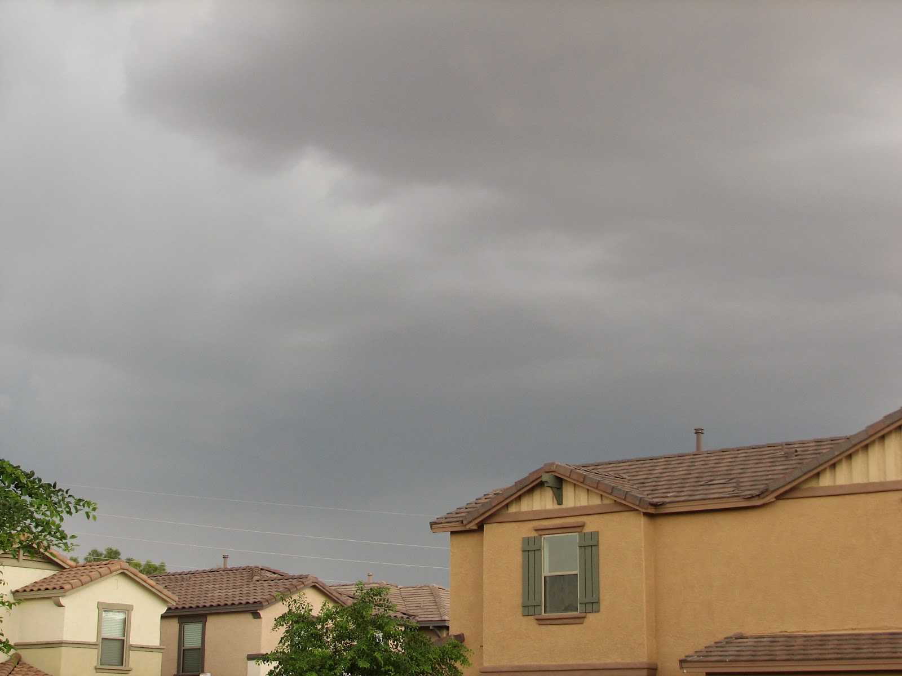
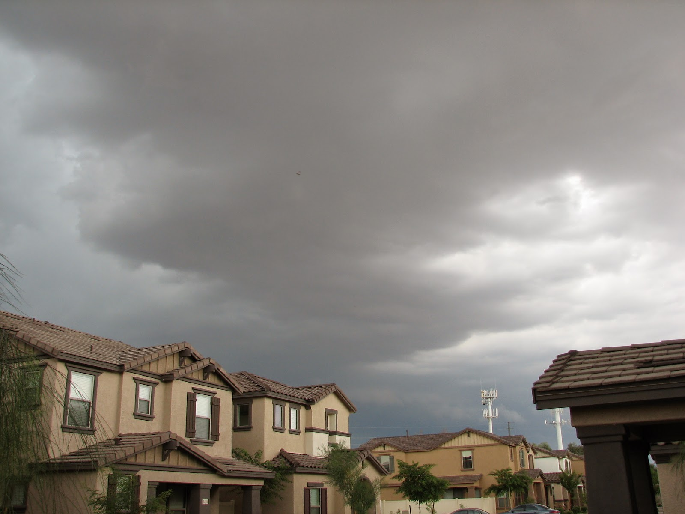

Recovered weblog entry
Monsoon
While downstairs cleaning this afternoon, the sunlight entering through my eastern windows faded quickly. Crossing my fingers, I walked out the front door and snapped a few pictures for good measure. A storm was brewing just northeast of my location, and luckily seemed to be heading my way.
I should mention that I love the monsoon season in Arizona...I know many others do not share my predilection. But these summer storms have a certain je ne sais quoi...a seeming ability to transcend the boiling rut of summer and make it feel new again.
Many of the sentiments date back to the elementary school years, when those precious summer months meant something entirely different than they do now. As creatures of curious stimulus, we sometimes find comfort in those few stable elements of our lives that repeat each year ad nauseum...The monsoons are as such for me.

